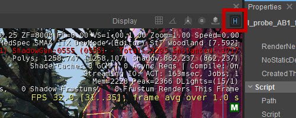
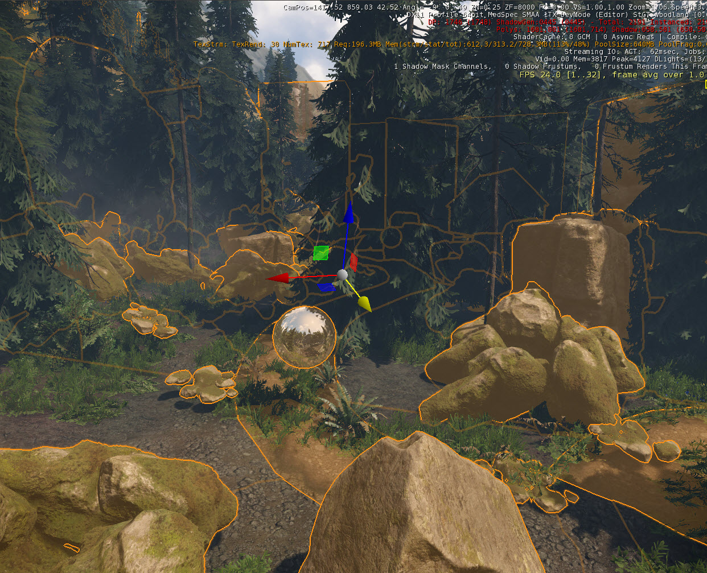
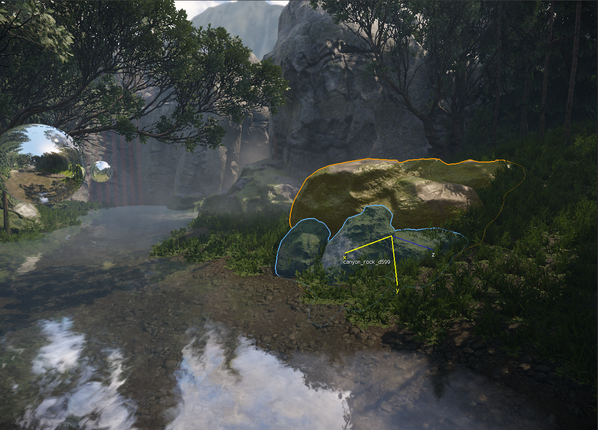
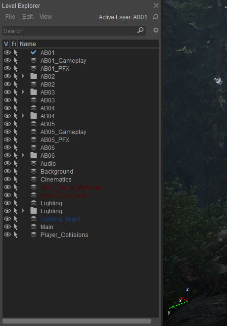
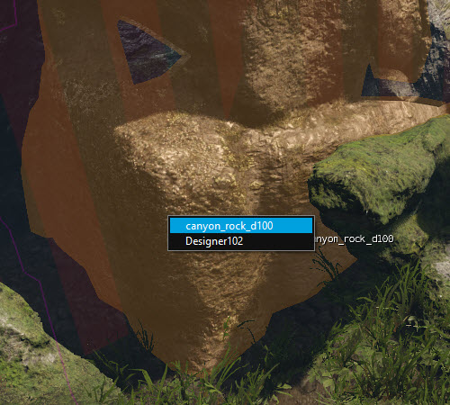

Обзор
Понимание концепции выделения внутри CRYENGINE Sandbox необходимо для успешного изменения объектов в вашей сцене.
Выберите режим

В Выбрать В этом режиме вы можете выбирать отдельные объекты, группу объектов, а также добавлять или удалять из текущего выделения в окне видового экрана простыми действиями мыши. (Режим выбора буквально только выбирает объекты, не перемещая их.)
Показать/скрыть помощники
Помощники позволяют пользователю упростить выбор объектов в 3D-окне просмотра. Помощников можно активировать, переключив Ч значок в верхней части окна 3D-просмотра:

Выбор одного объекта
Объекты с физическими сетками можно выбрать, просто наведя курсор мыши на объект и нажав левую кнопку мыши (LMB).
Выбор 3D-объектов без встроенных в ресурс прокси физической сетки можно выполнить либо путем перемещения курсора мыши по граничным краям ограничивающей рамки, либо, что более удобно, путем отображения оси вращения объекта, удерживая Пробел. Чтобы это сработало, Показать помощников должен быть активирован.
2D-элементы, такие как частицы, можно выбирать с помощью вспомогательного значка 2D, отображаемого в начале координат объектов. Эти значки включаются/выключаются с помощью Показать помощников кнопка.
Выбор нескольких объектов
Чтобы выбрать несколько объектов, перетащите рамку вокруг объектов, которые вы хотите выбрать, а затем отпустите кнопку мыши, когда все необходимые объекты окажутся внутри рамки выбора. При использовании выбора перетаскивания он захватывает все внутри этого 2D-поля до бесконечности. Поэтому в загруженных сценах с большим количеством объектов полезно наклонить камеру, чтобы уменьшить количество объектов на экране (т. е. смотреть в сторону пола или неба).
Текущая версия CRYENGINE позволяет трансформировать выбранные объекты с помощью одного приспособления, даже если вы выбрали несколько объектов в окне просмотра. Это помогает уменьшить беспорядок, когда в окне просмотра выбрано несколько объектов. Гизмо появится в центральной точке выбранных объектов.
Если используется локальная или родительская система координат, гизмо преобразования будет использовать соответствующую систему координат последнего выбранного объекта.
Управление выбором нескольких объектов с помощью штуковин:

Контуры выбора

Когда вы наводите курсор мыши на объект или выбираете его, вы увидите выделение и контур. Эффект работает следующим образом:
- Если объект выбран, поверх него будет наложен цвет выделения. Вокруг его силуэта будет контур того же цвета.
- Если объект выделен, он также получит цвет выделения.
- Если объект одновременно выделен и выделен, он получит выделенный контур и цвет выделения, смешанный с ним. Таким образом, можно будет сказать, что он также выбран.
Контур выделенного объекта будет отображаться по краям выбранных объектов, чтобы их было легче различить.
Если выделенный или выбранный объект частично скрыт, затемненный (призрачный) контур все равно будет отображаться, чтобы пользователи могли определить его местоположение.
На данный момент эта функция не работает для:
- Трава/объединяемая растительность во время редактирования растительности
- Прикрепленное оружие к анимированным персонажам
Вы можете изменить цвета, ширину контура и другие параметры, касающиеся контуров выделения, в Предпочтения.
Добавление и удаление объектов из выделения
Удерживайте Ctrl и щелкните объект, который хотите добавить в выделение или удалить из него.
Удерживая Альтернативный вариант нажатие на выбранные объекты удалит их только из текущего выделения.
Вы можете добавлять и удалять несколько объектов одновременно, удерживая Ctrl/Альт соответственно, перетаскивая рамку вокруг объектов.
Блокировка выбора
Заблокируйте текущий выбор, перейдя к Уровень -> Выбор -> Заблокировать выбор (или нажав Ctrl+Shift+Пробел) позволяет выполнять преобразования и другие операции, не беспокоясь об отмене выделения выбранных в данный момент объектов.
Level Explorer
Level Explorer Окно позволяет быстро искать объекты, скрывать/показывать и закреплять/размораживать объекты или целые слои в виде списка. Вы также можете просматривать скрытые или замороженные объекты, не меняя их состояния. Вы можете открыть окно через Инструменты -> Редактор уровней -> Level Explorer.
Чтобы скрыть/показать объект с помощью Level Explorer, щелкните значок глаза в крайнем левом столбце. Щелчок по значку глаза изменит состояние этого объекта на «Скрытый».
Чтобы заморозить/разморозить объект через Level Explorer, нажмите на значок стрелки во втором столбце слева.

Level Explorer позволяет вам делать больше, чем просто выбирать, скрывать/показывать инструменты и слои и замораживать/размораживать их. Для получения дополнительной информации об этом инструменте нажмите здесь.
Глубокий отбор
Эта функция позволяет пользователям легко выбирать правильный объект среди нескольких объектов, находящихся практически в одном и том же месте.
Обычно операция выбора такая же, как и раньше. Однако если вы хотите выбрать объект в многолюдной зоне, вы можете просто щелкнуть несколько раз, чтобы циклически просмотреть все объекты, расположенные в пределах определенного количества пикселей.
Использование глубокого выделения
Чтобы использовать глубокое выделение, вам необходимо использовать комбинации клавиш:
TAB+Z+LMB. При этом появится список всех элементов, находящихся под курсором мыши. (режим списка), см. рисунок ниже.
TAB+LMB. Это режим цикла (без выпадающего списка)
Глубокий участок в действии TAB+Z+LMB (дальность = 50 м)

Режим «Глубокое выделение» активируется только тогда, когда несколько объектов находятся в диапазоне «Глубокое выделение».
Пороговое значение расстояния можно контролировать в Предпочтения меню под Редактировать -> Настройки -> Общие настройки -> Общие -> Глубокое выделение -> Диапазон.. Значение по умолчанию: 1. (Настройка по умолчанию — 1 метр. Для эффективного использования увеличьте диапазон, чтобы учитывать больше объектов.)